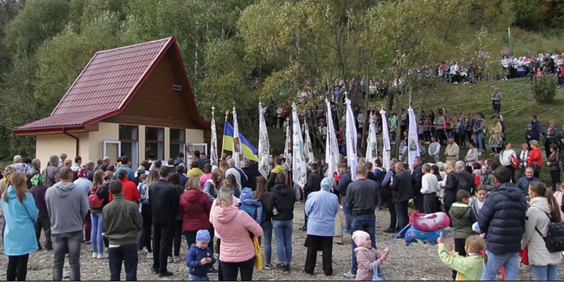
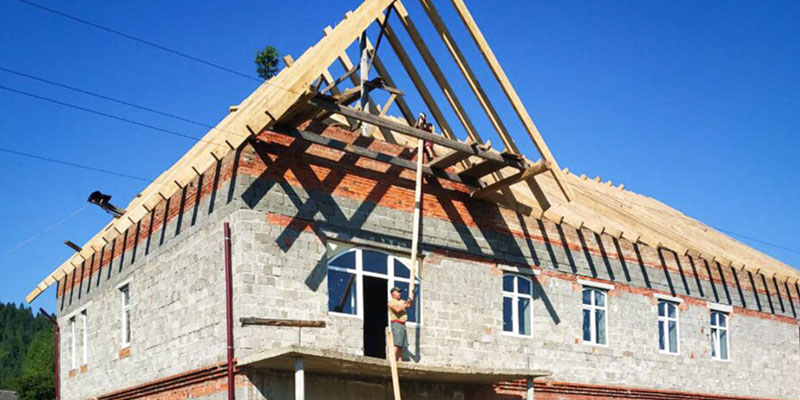
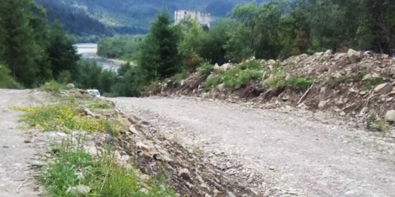
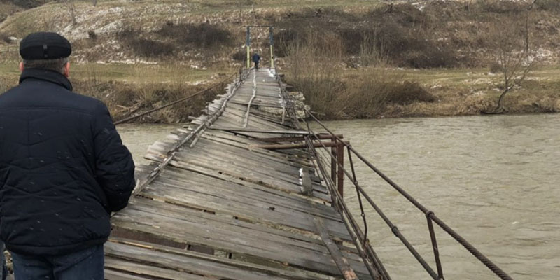
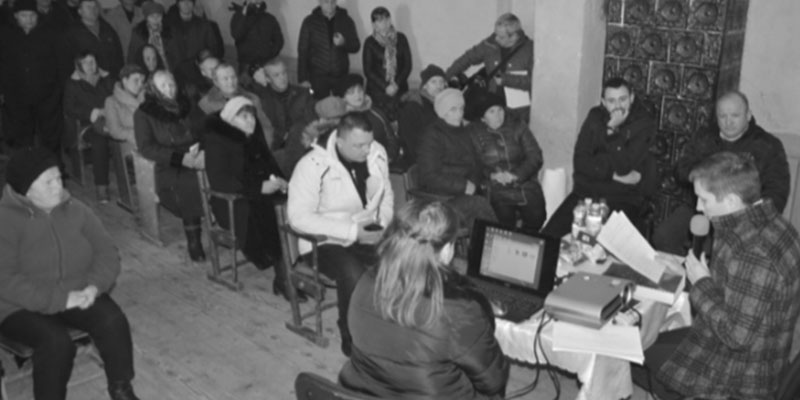
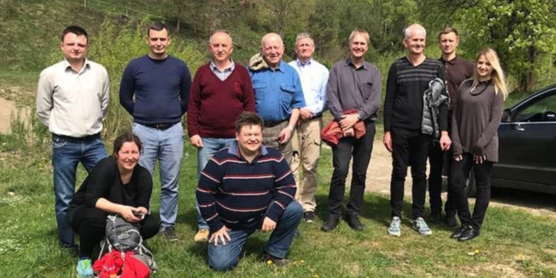

Small hydropower: German-Austrian experience of Balford Ukraine LLC: "How we got to Germany", "Hydropower evolution", "Austrian impression" and more.

On September 29, 2019, the 15th traditional procession to the Heroyiv Nebesnoyi sotni mountain took place in the Dovhe-Hirsʹke village.
Read more
Repair of the roof of the Narodny dim: in the process of restoration, summer 2019
Read more
Signing a social agreement on the development of the Dovhe-Hirsʹke village
Read more
Balford Ukraine LLC helped the residents of the Dovhe-Hirsʹke village, Drohobych district, Lviv region to repair the bridge over the Stryi river.
Read more
On March 12, 2019, a public hearing was held in the Dovhe-Hirsʹke village on the environmental impact of the construction of a 2 MW hydroelectric power plant.
Read moreSmall hydropower: German-Austrian experience of Balford Ukraine LLC: "How we got to Germany", "Hydropower evolution", "Austrian impression" and more.
Read more
Lviv district administration. Group of norvegian consultants, Balford Ukraine. Project 2MVT + 2 MVT
Read more